| sound | A · hand table | B · VLM free text | C · generic |
|---|---|---|---|
Alarm known · fire alarm plain Alarm bell ringing loudly C an alarm on a wall, flashing red light, bright red glow mined neg bell, clock checker a fire alarm (a bell or alarm box on a wall) vs 12 look-alikes | 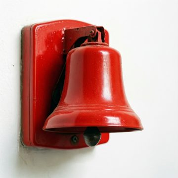 | 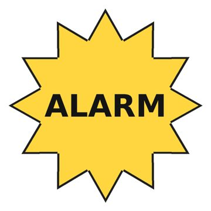   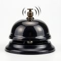 |  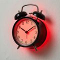 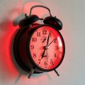 |
Crowd known · crowd plain crowd C a large group of people packed tightly together, shouting and cheering loudly, open mouths and raised hands mined neg lion, crows checker a crowd of people vs 11 look-alikes 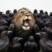 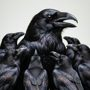 | 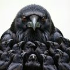 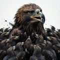 |   | |
Steam known · steam plain Steam rising from a kettle C a boiling water inside a metal pot, bubbling vigorously on the stove, white steam rising from the rim mined neg kettle checker steam hissing out of a pipe or valve vs 9 look-alikes |  | 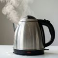  |  |
Smoke detector, smoke alarm known · smoke detector plain Smoke detector sounding alarm C a smoke detector on a ceiling, emitting warning beeps, flashing red light mined neg camera, security checker a smoke detector vs 13 look-alikes 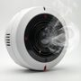 | 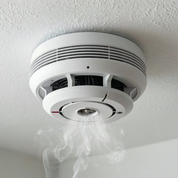 | 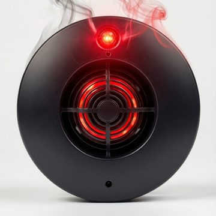 | 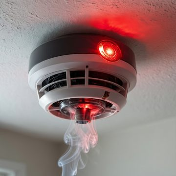 |
Vehicle horn, car horn, honking known · car horn plain A car honking its horn C (slots refused: extra object/person/place driver; people driver,finger) mined neg - checker a car sounding its horn vs 11 look-alikes 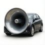 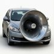 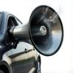 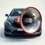 | 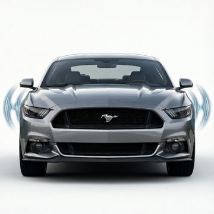 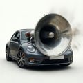 |   | 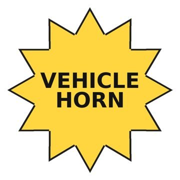   |
Rattle (instrument) known · rattle plain Rattle instrument shaking C a Rattle instrument In close-up view, Being shaken vigorously, Blurred motion of shell mined neg brush, ball, drum checker a rattle or maraca being shaken vs 14 look-alikes 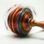 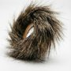 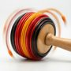 | 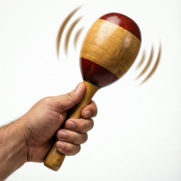 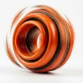 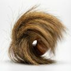 | 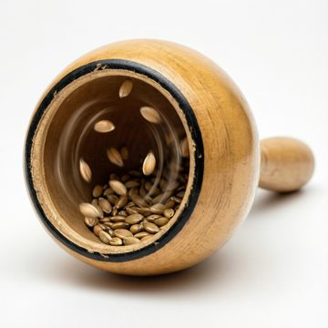   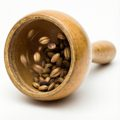 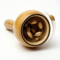 | 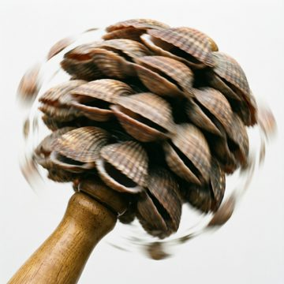 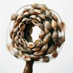 |
Typing known · typing plain hands typing on a computer keyboard C a computer keyboard on a desk surface, keys being pressed down, keys depressed into frame mined neg hands checker hands typing on a keyboard vs 9 look-alikes |  | 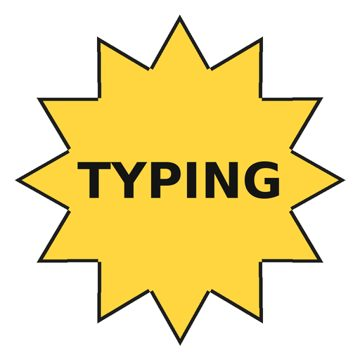 | |
Chorus effect unseen plain chorus effect C a Chorus effect unit on a studio desk, processing audio signal, glowing indicator lights mined neg man checker chorus effect vs 6 look-alikes 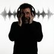 | 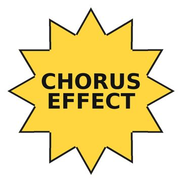 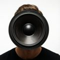 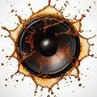 | 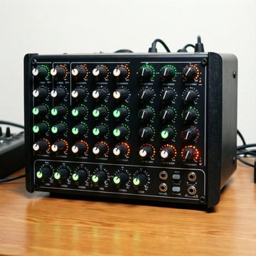 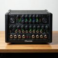 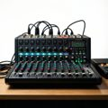 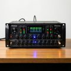 | |
Tools unseen plain A person using tools C (slots refused: object head 'hammer' not in label/ancestors/description; extra object/person/place splinters,wood; forbidden wood) mined neg man checker a person using tools vs 5 look-alikes 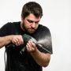 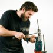 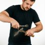 | 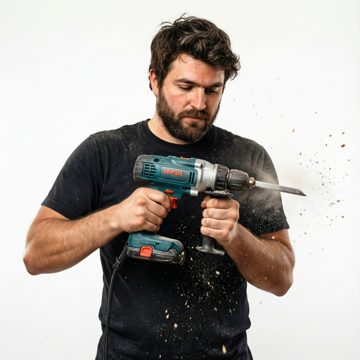 | 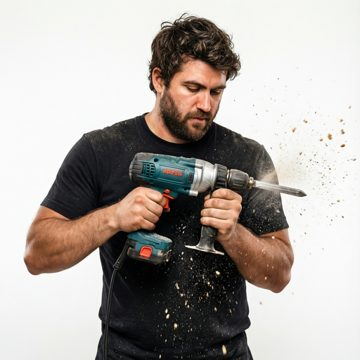 | |
Miscellaneous sources unseen plain miscellaneous sources making sound C a miscellaneous source on a flat surface, emitting distinct noise, visible vibration ripples mined neg man checker miscellaneous sources making sound vs 6 look-alikes 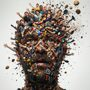 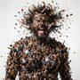 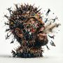 | 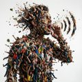 | ||
Shuffling cards unseen plain shuffling cards C playing cards in a tight stack, being rapidly separated and mixed, blurred motion of card edges mined neg - checker shuffling cards vs 5 look-alikes | |||
Hair dryer unseen plain Hair dryer blowing hot air C a hair dryer near damp hair, blowing hot air, hair strands moving mined neg - checker hair dryer blowing hot air vs 5 look-alikes | |||
Stomach rumble unseen plain A person's stomach rumbles C a stomach inside the human body, churning digestive contents, visible abdominal movement mined neg belly, pregnant, woman checker a person's stomach rumbles vs 7 look-alikes | |||
Doorbell unseen plain doorbell C (slots refused: extra object/person/place bell) mined neg lock checker doorbell vs 6 look-alikes | |||
Grunt unseen plain A person grunting C a human in close-up view, making a short low gruff noise, mouth open with tense face mined neg man, angry checker a person grunting vs 6 look-alikes | |||
Power tool unseen plain A power tool cutting wood C (slots refused: object head 'drill' not in label/ancestors/description; extra object/person/place wood) mined neg - checker a power tool cutting wood vs 5 look-alikes |  | ||
Otoacoustic emission unseen plain a person making a otoacoustic emission sound C an inner ear inside the human head, generating positive feedback, vibrating hair cells mined neg man checker a person making a otoacoustic emission sound vs 5 look-alikes |  | ||
Hoot unseen plain Owl hooting C an owl on a tree branch, opening its beak wide, beak open wide mined neg - checker owl hooting vs 4 look-alikes | |||
Dental drill, dentist's drill unseen plain Dentist using dental drill C a dental drill inside a patient's mouth, grinding tooth enamel, fine white tooth dust mined neg tool checker dentist using dental drill vs 7 look-alikes |  | | |
Wobble unseen plain wobbling object C a structure in the air, shaking unsteadily back and forth, visible vibration lines mined neg vortex, vase checker wobbling object vs 7 look-alikes | |||
Drill unseen plain A drill is drilling C (slots refused: extra object/person/place wood) mined neg - checker a drill is drilling vs 5 look-alikes |  | ||
Bird unseen plain A bird singing C a bird on a tree branch, opening its beak wide, beak open wide mined neg - checker a bird singing vs 3 look-alikes | |||
Whale vocalization unseen plain A whale singing underwater C a whale in the water, opening mouth to vocalize, ripples spreading from mouth mined neg - checker a whale singing underwater vs 4 look-alikes |  | | |
Microwave oven unseen plain Microwave oven beeping C (slots refused: extra object/person/place glass) mined neg - checker microwave oven beeping vs 5 look-alikes |  | | |
Boat unseen plain A boat moving through water C a boat in the water, moving through the water, white wake behind hull mined neg - checker a boat moving through water vs 3 look-alikes | |||
Gull, seagull unseen plain A gull crying C (slots refused: extra object/person/place sky) mined neg - checker a gull crying vs 3 look-alikes |  | ||
Wood unseen plain Wood splintering into pieces C (slots refused: extra object/person/place hammer,splinter; forbidden hammer,splinter) mined neg broken, tree, log checker wood splintering into pieces vs 7 look-alikes | |||
Printer unseen plain Printer printing a document C a printer on a desk, printing a document, paper emerging from slot mined neg - checker printer printing a document vs 5 look-alikes | |||
Cat unseen plain A cat meowing C (slots refused: extra object/person/place meow; forbidden meow) mined neg - checker a cat meowing vs 4 look-alikes |  | | |
Dial tone unseen plain a telephone making a dial tone sound C a telephone on a desk, emitting a steady tone, glowing green light mined neg phone checker a telephone making a dial tone sound vs 6 look-alikes |  | | |
Splash, splatter unseen plain Water splashing into a pool C a liquid on a hard surface, colliding with the surface, splashing droplets mined neg water checker water splashing into a pool vs 4 look-alikes | |||
Battle cry unseen plain a person making a battle cry sound C a combatant in the battle, yelling aggressively, mouth wide open mined neg man checker a person making a battle cry sound vs 5 look-alikes |